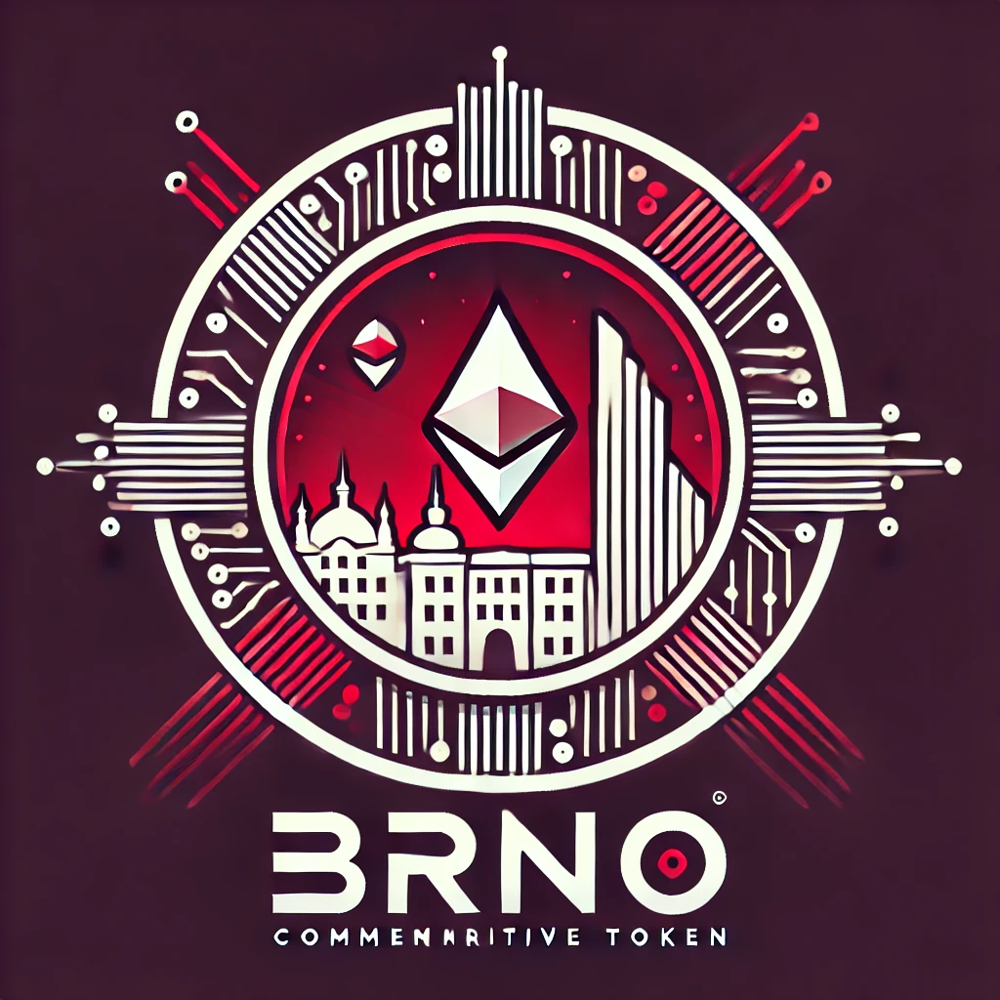

Digitální suvenýr pro návštěvníky Brna s exkluzivními výhodami.
BRNO token je ERC-20 digitální aktivum, které slouží jako důkaz návštěvy města Brna. Nabízí slevy v partnerských podnicích a exkluzivní výhody pro držitele.
Navštivte Brno a dokončete verifikační proces k získání 1 BRNO zdarma. Účastí na městských akcích můžete získat další tokeny.
Token BRNO lze využít v následujících podnicích: